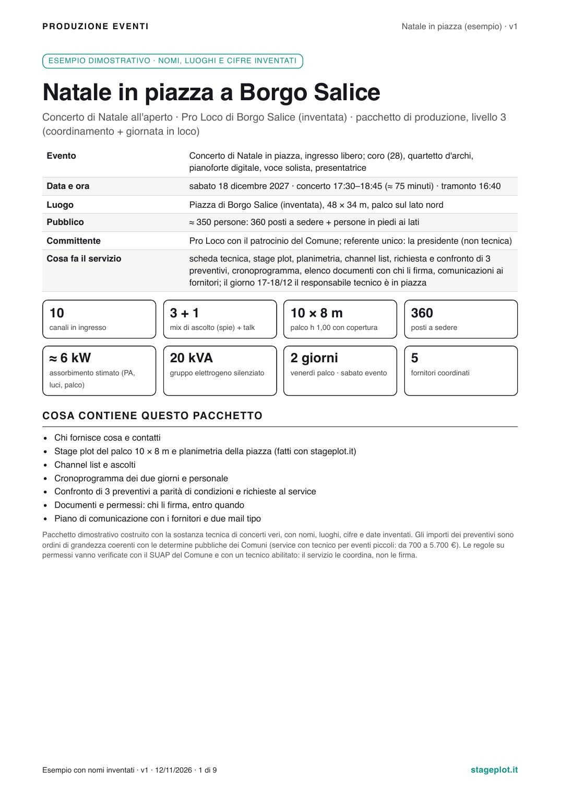
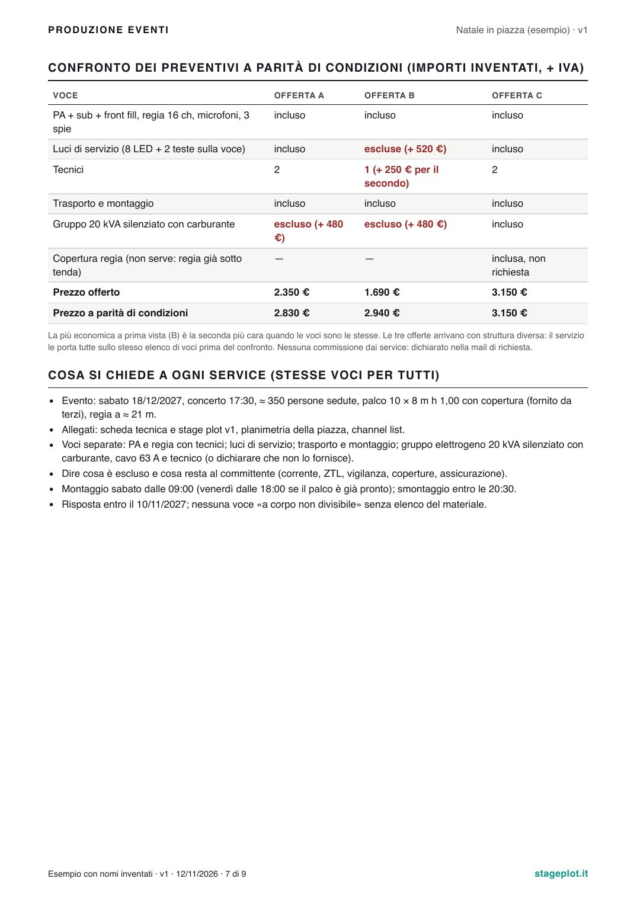
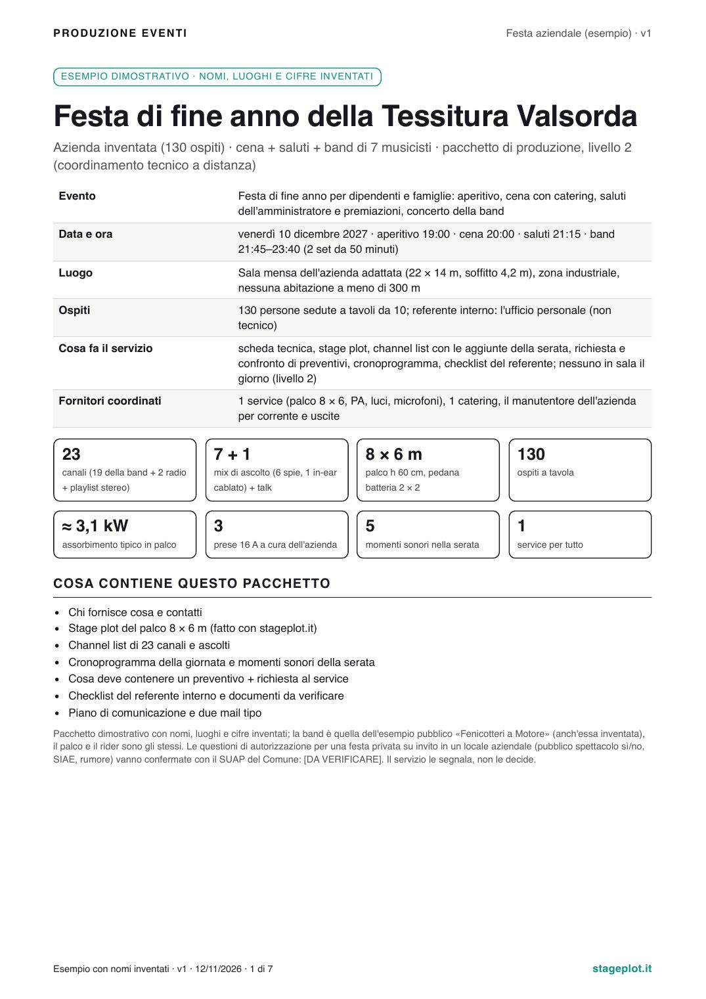
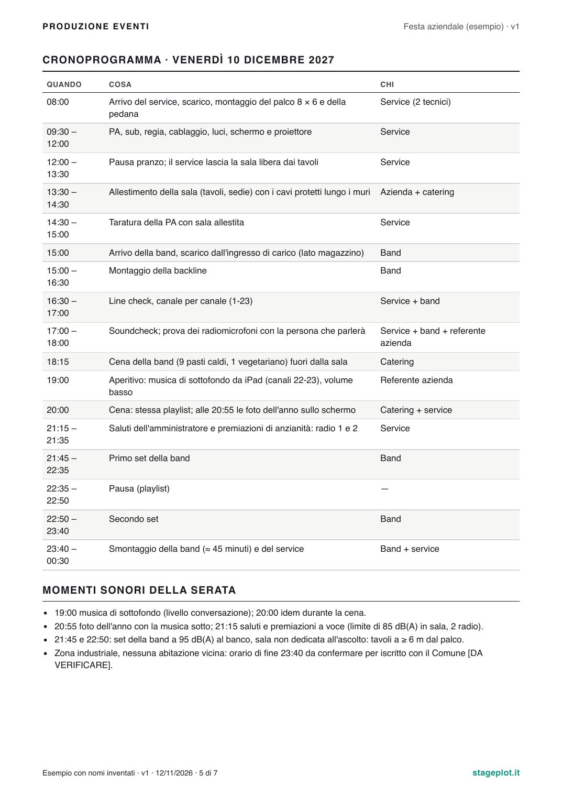
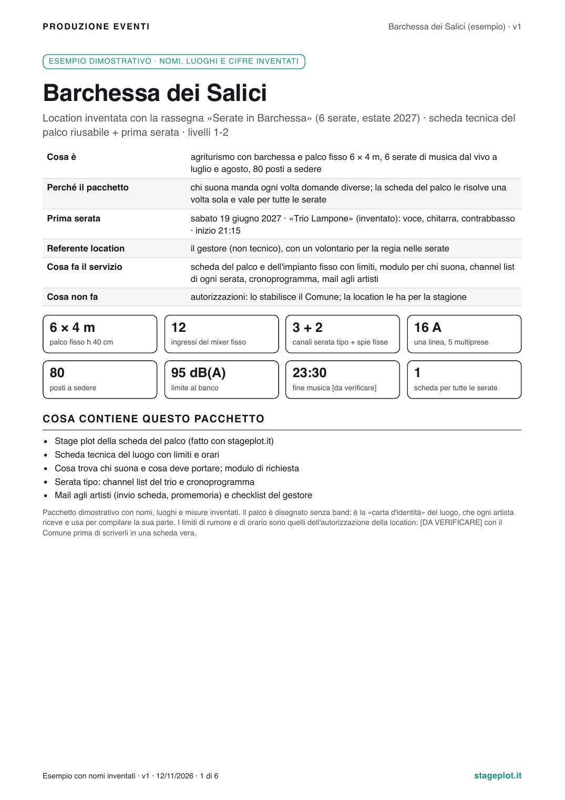
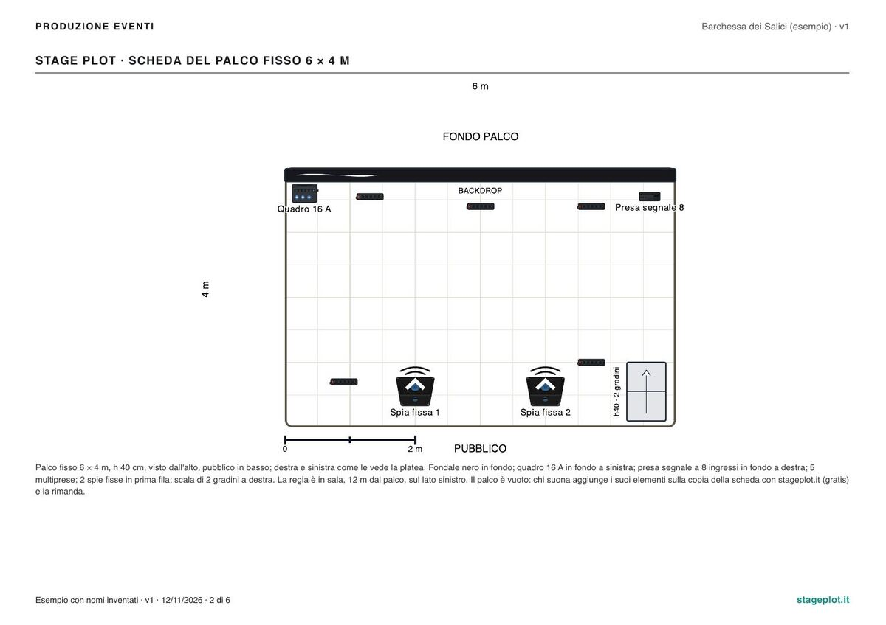

La parte tecnica del vostro evento, già organizzata
Preventivi dei fornitori confrontati a parità di condizioni, piante in scala, cronoprogramma e permessi con chi li firma. Per Comuni, Pro Loco, associazioni, aziende e location che non hanno un tecnico in casa.
da 59 €solo documenti
da 290 €coordinamento a distanza
da 790 €con Simone sul posto
Prezzi di partenza, in prova: il preventivo scritto indica importo finale e IVA, e lo ricevete prima di decidere.
Controllato da Simone Castellan, sound engineer per spettacoli dal vivo
In breve: «Produzione eventi» è il servizio con cui organizziamo la parte tecnica di un concerto, di una festa aziendale o di una rassegna per chi non ha un tecnico: documenti in scala, richieste ai fornitori e confronto dei preventivi, cronoprogramma, elenco dei permessi con chi li firma e per quando e, se serve, un sound engineer sul posto. Non vendiamo né noleggiamo palchi e impianti e non prendiamo commissioni dai fornitori. Ogni consegna la controlla Simone Castellan.
Vi riconoscete in una di queste?
«Abbiamo tre preventivi e non capiamo quale conviene.»Hanno voci diverse: il più basso spesso non comprende luci, tecnici o corrente.
«Ci chiedono documenti e non sappiamo cosa mandare.»Il teatro, il Comune o il service vogliono pianta, scheda tecnica, orari, chi porta cosa.
«Il giorno dell'evento nessuno sa chi arriva e quando.»Palco, service, band e catering si pestano i piedi senza un cronoprogramma.
Cosa ricevete
Livello 1
Documenti
da 59 €
Stage plot in scala (A3, 1:50)
Channel list e output list
Rider tecnico o scheda del vostro palco
PDF con versione e data, e progetto da riaprire su stageplot.it
59 € per una band fino a 12 musicisti; 149 € per la scheda di una location o per organici maggiori. In 3 giorni lavorativi dal materiale completo.
Livello 2
Coordinamento a distanza
da 290 €
I documenti del livello 1
Richiesta di preventivo a 2-3 fornitori e confronto a parità di condizioni
Cronoprogramma e piano di produzione
Elenco dei documenti e dei permessi, con chi li firma e per quando
Mail ai fornitori, checklist per chi organizza
Da 290 € per un palco, un fornitore, una giornata; da 490 € con 2-3 preventivi e piano di comunicazione. Primo riscontro entro 1 giorno lavorativo, documenti definitivi 7 giorni prima dell'evento.
Livello 3
Produzione in loco
da 790 €
Il livello 2
Sopralluogo e controllo del montaggio
Simone Castellan sul posto come responsabile tecnico e sound engineer
Foglio del giorno: orari, contatti, checklist
Da 790 € a 1.200 € a evento secondo durata e distanza. L'impianto proprio, se serve, si indica a parte.
Cosa non facciamo
Coordiniamo, non firmiamo. Vi diciamo quali carte servono, chi le firma, con quali dati e per quando, e controlliamo che arrivino.
Non firmiamo relazioni di sicurezza né certificazioni di palchi, strutture o impianti elettrici, e non presentiamo la SCIA né il parere della Commissione di vigilanza: li firma un tecnico abilitato.
Non presentiamo domande al posto vostro, non curiamo la SIAE, non scegliamo gli artisti e non trattiamo cachet.
Non noleggiamo né vendiamo palchi, impianti e luci e non fatturiamo per conto dei fornitori: non prendiamo commissioni da nessuno, per questo possiamo dirvi quale offerta conviene.
Tre esempi
Sono pacchetti dimostrativi con nomi, luoghi e cifre inventati, costruiti con la stessa sostanza tecnica dei concerti veri: li guardate qui, senza scaricare niente. Se volete vederne uno intero, chiedetelo nel modulo.
Natale in piazza
Coro, archi, pianoforte e solista per 350 persone, organizzato da una Pro Loco.
Stage plot e planimetria della piazza, cronoprogramma di due giorni, permessi con chi li firma, e tre preventivi confrontati: il più basso a prima vista era il secondo più caro una volta messe le stesse voci.
9 pagine · livello 3

La scheda dell'evento: tutto quello che il service guarda per primo

Il confronto dei preventivi a parità di condizioni (importi inventati)
Festa di fine anno di un'azienda
130 ospiti, saluti, cena e una band di sette elementi; il referente interno non è un tecnico.
Stage plot, channel list da 23 canali, cronoprogramma della serata con i momenti sonori, cosa deve contenere un preventivo e una checklist per il referente.
7 pagine · livello 2

La scheda dell'evento e i numeri chiave

Il cronoprogramma: chi fa cosa e a che ora
Una location con una rassegna
Un agriturismo con sei serate musicali e un palco fisso.
La scheda tecnica del palco, cosa trova e cosa deve portare chi suona, il modulo di richiesta per gli artisti e una serata tipo: da riusare a ogni data.
6 pagine · livelli 1-2

La scheda del luogo

Il palco fisso in scala 1:50
Avete un evento di cui potete parlare? Scriveteci: con il vostro permesso scritto lo mostriamo qui al posto di un esempio.
Come funziona
Descrivete l'eventoData, luogo, tipo, persone, cosa c'è già, scadenze. Il modulo non chiede soldi. Rispondiamo entro un giorno lavorativo con due o tre domande e il preventivo scritto.
Prepariamo e controlliamoDocumenti e richieste ai fornitori con gli strumenti di stageplot.it e le regole che uso sui palchi veri. Prima di ogni consegna e di ogni mail a un fornitore passa da Simone.
Decidete voi, noi seguiamoVi presentiamo le offerte sulla stessa lista di voci, cronoprogramma e documenti con le scadenze; solleciti, contatti del giorno e, dopo l'evento, un recap con cosa cambiare la prossima volta.
Per chi è
Comuni e Pro Loco
Associazioni e cori
Aziende: feste, convention, cene di gala
Band e artisti in tour piccolo
Location e agriturismi con serate
Rassegne e piccoli festival
Perché fidarsi
Gli stessi documenti dei concerti con orchestra. Sono Simone Castellan, sound engineer: ogni anno preparo stage plot, channel list, cronoprogrammi e richieste ai service per decine di concerti. Qui lo faccio per chi non ha un tecnico.
Indipendenti dai fornitori. Nessun palco da vendere, nessuna commissione: le offerte si confrontano su una lista di voci uguale per tutti.
Il controllo è umano. Una parte del lavoro è automatica, ma nessun documento e nessuna mail a un fornitore parte senza che li abbia guardati io. Se trovo un errore nostro, lo correggo: una correzione dei documenti è compresa.
Servizio in prova. Stiamo seguendo le prime pratiche e aggiustiamo prezzi e tempi con quello che impariamo: per questo i prezzi sono «da» e il preventivo scritto arriva prima di ogni impegno. Preferite solo il rider della band? C'è il rider tecnico completo a 59 €; o fate da soli con l'editor gratuito.
Descrivete il vostro evento
Bastano cinque minuti. Se avete una pianta del luogo, un programma o un vecchio rider, potete mandarli dopo, rispondendo alla nostra mail.
Domande frequenti
Quanto costa?
Da 59 € per i soli documenti (una band fino a 12 musicisti), da 290 € per il coordinamento a distanza, da 790 € con Simone sul posto il giorno dell'evento. Sono prezzi di partenza, in prova: dopo la vostra richiesta ricevete un preventivo scritto con importo finale e IVA, e si parte solo dopo il vostro sì.
Cosa serve per cominciare?
Data, luogo, tipo di evento, numero di persone e cosa c'è già (palco, impianto, corrente). Se avete una pianta del luogo, un programma o un vecchio rider, meglio; altrimenti le domande ve le facciamo noi.
Fate anche i permessi?
Non firmiamo né presentiamo domande al posto vostro. Vi diciamo quali carte servono, chi le firma (un tecnico abilitato, il palchista, l'installatore, il Comune), con quali dati e per quando, e controlliamo che arrivino. Le regole cambiano da Comune a Comune: per ogni evento si confermano con l'ufficio competente, in genere lo sportello unico per le attività produttive.
Perché non vendete anche il service?
Perché così possiamo dirvi quale offerta conviene. Se volete, vi suggeriamo fornitori a cui chiedere; né loro né noi riceviamo commissioni, e lo scriviamo anche nella richiesta di preventivo.
Posso modificare i documenti dopo?
Sì. Lo stage plot si riapre su stageplot.it con «Importa», gratis e senza account, e lo cambiate da soli quando cambia il palco. Una correzione dei documenti consegnati è compresa.
Quanto tempo prima devo scrivervi?
Per un evento in piazza meglio otto settimane prima: di solito i service si interpellano da quattro a otto settimane prima e le carte chiedono tempo. Per una festa aziendale quattro-cinque settimane; per i soli documenti bastano tre giorni lavorativi dal materiale completo. Con meno tempo scriveteci lo stesso: vi diciamo cosa si riesce a fare.
Lavorate fuori dal Veneto?
I livelli 1 e 2 sì, a distanza. Il livello 3, con Simone sul posto, si valuta in base alla distanza e al giorno.
Cosa significa «servizio in prova»?
Che stiamo seguendo le prime pratiche e misurando tempi e lavoro per aggiustare prezzi e consegne. Per voi cambia una cosa: i prezzi sono di partenza e li confermiamo per iscritto prima di cominciare.
Chi c'è dietro?
Simone Castellan, sound engineer di Castelfranco Veneto: prepara ogni anno stage plot, channel list e richieste ai service per concerti anche con orchestra e ha creato stageplot.it. Ogni documento e ogni mail ai fornitori passa da lui prima di partire.